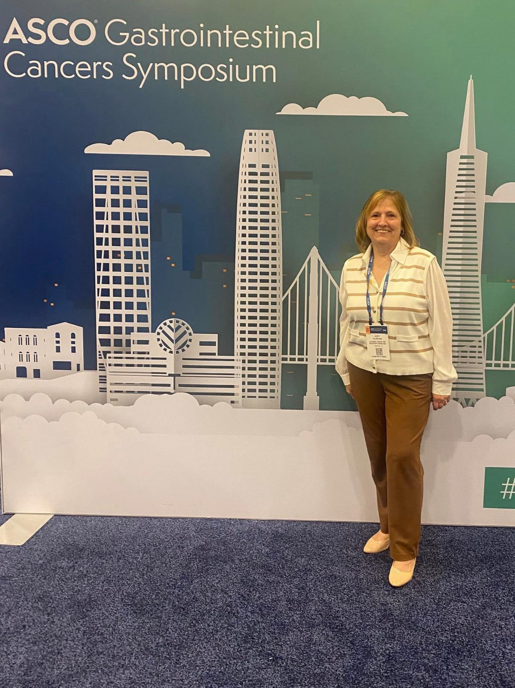
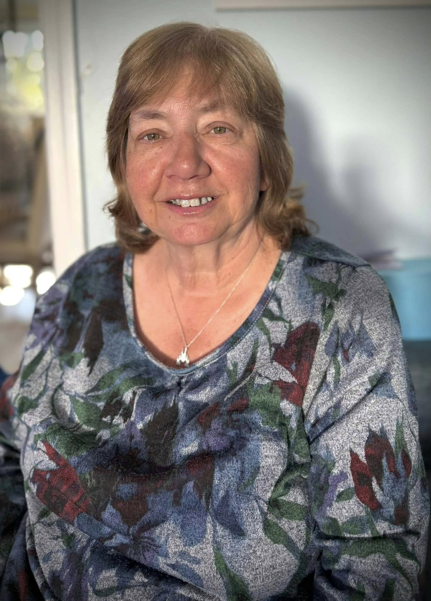
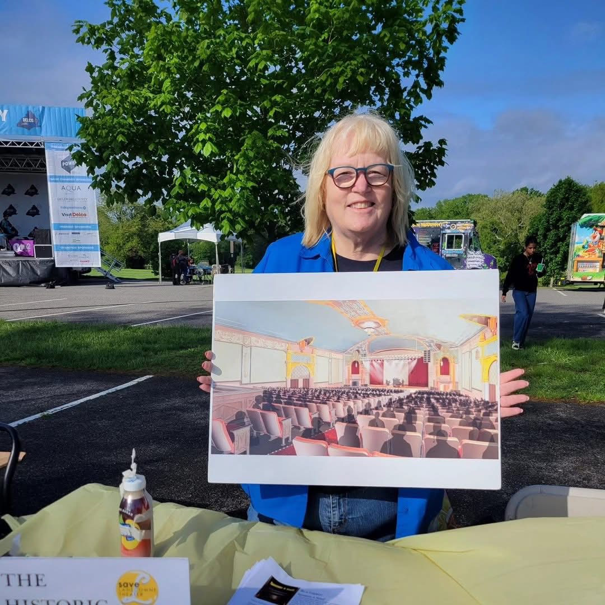
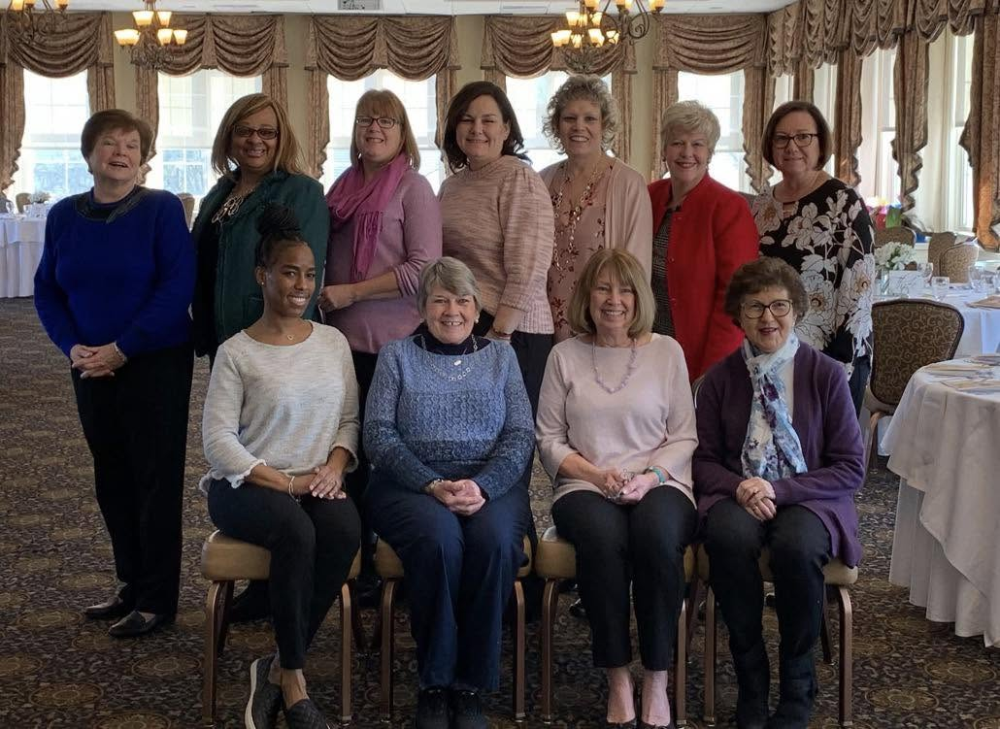

Hall of Fame Inductees
Sister Kathleen Monica Schipani
Sister Kathleen has dedicated her career to uplifting individuals and communities through faith, education, and inclusion.
Sister Kathleen has dedicated her career to uplifting individuals and communities through faith, education, and inclusion.
She has served as Director of Religious Education for the Deaf Apostolate of the Archdiocese of Philadelphia and held national leadership roles, including President of the National Catholic Office for the Deaf and Chair of the National Catholic Partnership on Disabilities. Her service has also included work on the Board of Catholic Charities and her appointment as a General Councilor for the Sisters, Servants of the Immaculate Heart of Mary.
Her impact spans decades — locally and nationally — reflecting Prendie's deepest values: compassion, excellence, and service to others. Sister Kathleen's tireless commitment to accessibility, ministry, and leadership stands as an inspiration to generations of students and alumnae.
A lifetime of service, leadership, and advocacy is why Sister Kathleen Monica Schipani has been selected for induction into the Prendie Hall of Fame.
Patty McDevitt Martin
Patty Martin's lifelong dedication to education, service, and community is something we on the committee have witnessed and admired for years.
Patty Martin's lifelong dedication to education, service, and community is something we on the committee have witnessed and admired for years.
Patty built a remarkable career spanning higher education and K–12 schools. After beginning her professional life in human resources while raising four children, she joined Saint Joseph's University in 1998 and spent 21 years in roles of increasing responsibility. After completing her undergraduate and graduate degrees, she became Director of Government and Community Relations—forging partnerships with surrounding neighborhoods, leading major service initiatives, and coordinating projects for hundreds of student-athletes.
Throughout those years, she also remained connected to Prendie and Bonner-Prendie as a production assistant for school musicals.
Since returning to the Prendie community in 2020, Patty has served tirelessly as an administrator, teacher, mentor, and volunteer—supporting everything from Religion classes and athletic events to alumni outreach. She also served proudly as Chair of the Prendie Hall of Fame Committee for 10 years.
Patty's warmth, professionalism, and unwavering commitment reflect Prendie's highest ideals, and we are proud to honor her with a well-deserved induction into the Prendie Hall of Fame.

Judy Gormley Culbertson
Judy Gormley Culbertson embodies resilience, compassion, and an unwavering commitment to making a difference.
Judy Gormley Culbertson embodies resilience, compassion, and an unwavering commitment to making a difference. She transformed personal tragedy into a powerful mission after losing her husband to a rare form of cancer, appendix cancer-pseudomyxoma peritonei (PMP). She organized the first "Making a Difference for Dutch" walk in 2007, which has since grown into the ACPMP Research Foundation's largest virtual fundraising event nationwide and has generated more than $1 million for research and education.
Judy now serves as the foundation's vice president and treasurer.
While raising three children and working full-time, Judy devoted herself to advocacy so that families facing the same diagnosis would not have to navigate it alone. Her dedication has raised national awareness of a rare disease and provided hope to countless individuals.
Judy Gormley Culbertson's legacy of service, perseverance, and generosity is what makes us proud to honor her with an induction into the Prendie Hall of Fame.

Anne Manginelli Pescatore
Anne Pescatore, along with her husband Bob, has long owned and operated MacDade Bowl, creating not just a thriving local business but a welcoming community hub.
Anne Pescatore, along with her husband Bob, has long owned and operated MacDade Bowl, creating not just a thriving local business but a welcoming community hub. Through her leadership, the bowling alley has hosted autism-friendly leagues and supported countless charitable causes, including a school-supply drive through Cate's Classroom.
Anne's impact on Prendie athletics is extraordinary. For decades, she and her family donated thousands of dollars' worth of practice time, lane rentals, and coaching support to the Prendie and Bonner-Prendie bowling teams — often at no cost — helping student-athletes develop their skills and achieve championship success. She also served as both an assistant coach and a volunteer, always eager to help students improve.
Anne Pescatore's legacy of Panda Pride, unwavering generosity, community spirit, and selfless commitment is why she has been selected for induction into the Prendie Hall of Fame.

Suzanne McShane Hall
Suzanne McShane Hall built a successful career in the travel industry before continuing her service in school administration — but it is her tireless volunteerism that truly defines her legacy.
Suzanne McShane Hall built a successful career in the travel industry, earning numerous professional honors, before continuing her service in school administration. But it is her tireless volunteerism that truly defines her legacy — a commitment so profound that she was nominated five separate times for this honor.
For decades, she has been a cornerstone of St. Philomena Parish, running its tuition-support scrip program, organizing major fundraising efforts, and supporting countless ministries. She has also played a vital role in revitalizing the historic Lansdowne Theater and has championed local causes, including the Lansdowne Fire Company and community outreach initiatives.
From welcoming prospective students to serving through Bonner's Mother's Club, Friar Fest, and alumni efforts, Suzanne's devotion to Prendie has remained steadfast.
Suzanne's years of generosity, leadership, and faith, along with her lifetime of service to the church, school, and community, are why she has been selected for induction into the Prendie Hall of Fame.
Dr. Teresa Ferrie Marlino
Dr. Teresa Marlino's extraordinary career in medicine and her global commitment to service are why she has been selected for induction into the Prendie Hall of Fame.
Dr. Teresa Marlino's extraordinary career in medicine and her global commitment to service are why she has been selected for induction into the Prendie Hall of Fame.
Teresa began her professional journey as a physical therapist before answering a call to become an OB/GYN, earning her medical degree at Jefferson and completing her residency at Lankenau Hospital. She also served as a Naval Reserve officer during the Iraq War, an experience that helped shape her resolve to serve others.
For more than two decades, Teresa has devoted herself to improving healthcare for women and families in Uganda through mission work, medical training, and leadership with organizations such as Echoes Around the World and Days for Girls. Her efforts have included delivering babies, mentoring clinicians, teaching midwifery students, and helping expand Double Cure Hospital — an impact that has earned her honors, including the Echoes Founder Award and the Pennsylvania Medical Society's Everyday Hero recognition.
Teresa's life's work is a powerful testament to compassion in action, and we are proud to honor her with this well-deserved induction into the Prendie Hall of Fame.
Melissa Maani
Melissa Maani's remarkable blend of creativity, perseverance, and service is both admirable and inspiring.
Melissa Maani's remarkable blend of creativity, perseverance, and service is both admirable and inspiring.
She began her Major League Baseball career with the Philadelphia Phillies after answering a simple newspaper ad, launching more than 25 years of shaping the team's visual identity. Rising to Manager of Graphic Design, she has earned World Series championship rings, Major League Baseball's Gold Card for long-term service, and wide acclaim for projects ranging from Phillies Charities initiatives to the Vatican-approved "Pope Rookie Card," now displayed in the National Baseball Hall of Fame in Cooperstown.
Beyond the ballpark, Melissa has devoted herself to mentorship and community outreach. She organized the Phillies' first Mental Health Awareness Night, spoke to students and young women, volunteered with numerous nonprofits, and supported scholarships for Prendie students.
Melissa's story is one of grit, generosity, and creative leadership, and we are proud to honor the lasting impact she continues to make with her induction into the Prendie Hall of Fame.
Karen Boyce McCollum
Karen Boyce McCollum has demonstrated a lifelong dedication to culture, faith, service, and leadership.
Karen Boyce McCollum has demonstrated a lifelong dedication to culture, faith, service, and leadership.
She has built a successful career in pharmaceutical and healthcare communications while simultaneously devoting decades to enriching the Philadelphia community. Her involvement with the Philadelphia St. Patrick's Day Parade began in childhood and grew into extraordinary leadership, including serving as President of the St. Patrick's Day Observance Association and supporting organizations such as Irish Network Philadelphia and the Donegal Association. She is also a former Philadelphia Rose of Tralee and Irish Echo 40 Under 40 honoree.
Karen's talents extend beyond boardrooms and committees. As a gifted vocalist, she has brought comfort and joy to families at community events, weddings, and funerals, while also championing charitable causes that support local families and cultural organizations. Equally devoted to her family, her parish, and her children's schools, she lives her values through daily action.
Karen's story is one of heart, heritage, and leadership in motion, and we are proud to welcome her into the Prendie Hall of Fame.
Maureen Muzikar
Maureen Muzikar's life was defined by faith, courage, and a selfless commitment to others—all qualities that continue to inspire the Prendie community long after her passing.
Maureen Muzikar's life was defined by faith, courage, and a selfless commitment to others—all qualities that continue to inspire the Prendie community long after her passing. The depth of her impact is reflected in her receiving multiple nominations for this honor.
Maureen earned degrees from Saint Joseph's University and pursued her passion for children as an educator, teaching fourth grade and special-education students. When she was diagnosed with acute myelogenous leukemia, she refused to let illness define her. Instead, she turned her fight into a mission of hope. She founded Maureen's Mile and raised tens of thousands of dollars for leukemia research during her lifetime. At her request, family and friends have carried that work forward, and contributions in her name have now surpassed $300,000. A scholarship established in her memory continues to support students bound for Prendie, keeping her spirit alive.
Maureen faced unimaginable challenges with grace and generosity, transforming suffering into service and leaving behind a legacy that endures. We are honored to induct Maureen into the Prendie Hall of Fame and to celebrate a life that continues to light the way for so many.
Clare Jones Rubin
Clare Jones Rubin's career in technology and her commitment to lifting others along the way serve as an inspiration to young women who aspire to careers in STEM.
Clare Jones Rubin's career in technology and her commitment to lifting others along the way serve as an inspiration to young women who aspire to careers in STEM.
She has built an impressive résumé as a product-management leader, holding senior roles at major technology companies such as Facebook and PayPal before founding her own startup. Her work reflects creativity, strategic vision, and a passion for innovation in an ever-evolving industry.
Just as meaningful is Clare's dedication to giving back to the Prendie community. She volunteered her time with the school's Girls Who Code chapter and donated laptops to graduating seniors in the program, ensuring that students left Prendie with both confidence and the tools they needed to succeed.
Clare's story is one of forward-thinking leadership and purposeful generosity, and we are proud to welcome her into the Prendie Hall of Fame.
Prendie Medal Recipients
The Prendie Medal recognizes outstanding non-graduates—faculty, staff, parents, and friends—for their significant commitment and contributions to the APHS community.
Maurice "Buddy" Hamel
As a beloved longtime theater director, Buddy dedicated more than three decades to the Prendie and Bonner stages, directing 51 musical productions.
Our final Prendie Medal recipient is Maurice "Buddy" Hamel, who will be honored posthumously for his everlasting impact on the Prendie community.
As a beloved longtime theater director, Buddy dedicated more than three decades to the Prendie and Bonner stages, directing 51 musical productions, including Archdiocesan premieres of Shenandoah, Meet Me in St. Louis, Crazy for You, Children of Eden, Footloose, Les Misérables, Cats, and Dames at Sea.
Buddy introduced generations of students to the magic of theater. To his students, he was far more than a director. He was a mentor, role model, encourager, and friend whose passion for the arts inspired confidence, creativity, and lifelong memories.
Buddy's impact on the Prendie community cannot be measured simply by the productions he staged, but by the countless lives he influenced along the way. We are honored to celebrate his extraordinary legacy with this well-deserved Prendie Medal.

Evelyn Brannan Tarpey
Through decades of leadership, volunteerism, and ministry, Evelyn has exemplified an unwavering commitment to Catholic education and service.
As part of the Prendie Hall of Fame, we recognize individuals whose dedication and service have made a lasting impact on the Prendie community, even though they are not Prendie graduates. This year, we are proud to honor Evelyn Brannan Tarpey as one of two recipients of the Prendie Medal.
Through decades of leadership, volunteerism, and ministry, Evelyn has exemplified an unwavering commitment to Catholic education and service. Her involvement with the Bonner-Prendie Mothers' Club, Saint Bernadette Parish, and numerous Archdiocesan ministries has strengthened countless students, families, and community members through her time, compassion, and leadership.
Professionally, Evelyn has served the Archdiocese of Philadelphia for over 30 years in impactful roles spanning pastoral planning, child and youth protection, ministry formation, and Catholic Social Services. Her work has always centered on supporting and uplifting others.
Evelyn Brannan Tarpey's dedication to faith, service, and the Prendie community makes her a truly deserving recipient of the Prendie Medal.